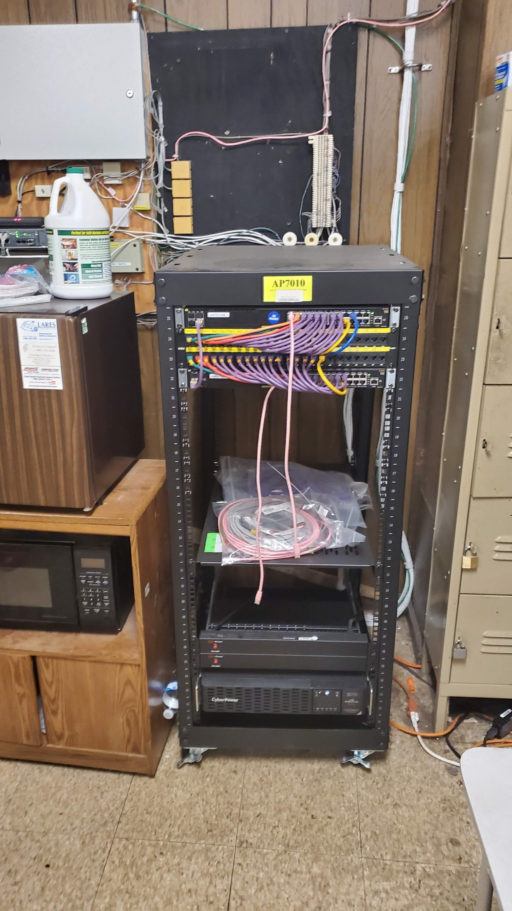
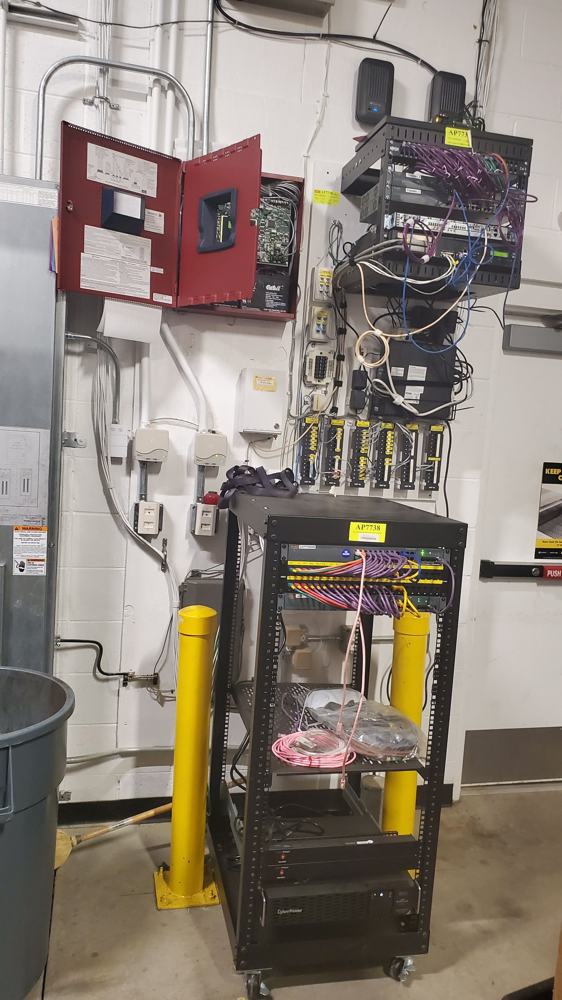
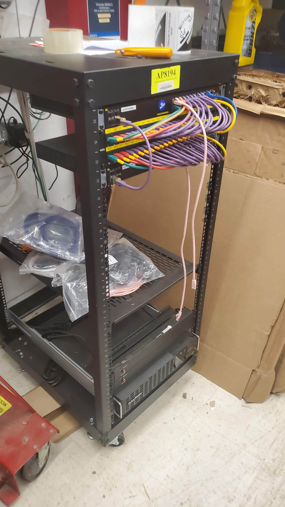
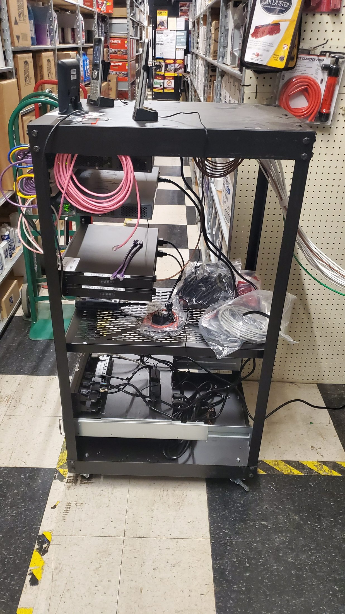
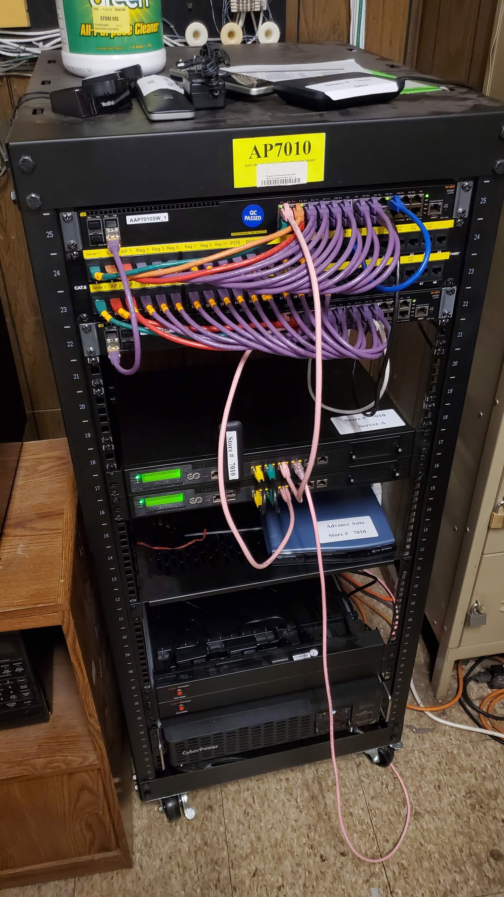

Grouped Rack Proof
Same retail rack, different site conditions.
These photos show rack work moving through rough wall wiring, utility-room placement, store-floor cutover conditions, labeled POS ports, phone/POS devices, UPS, server, and closeout context. The point is practical deployment work: making a real rack function in whatever environment the site gives you.




